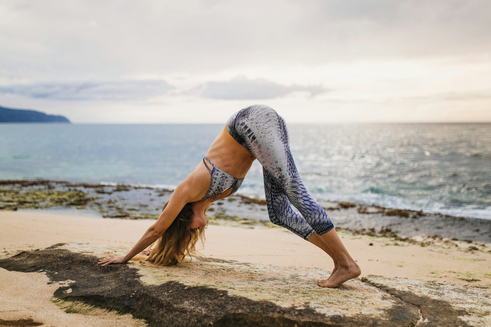
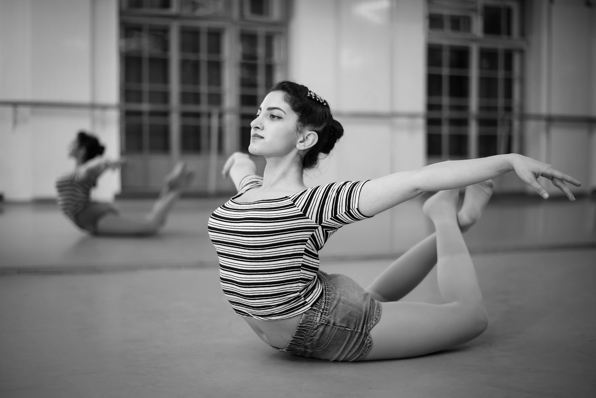
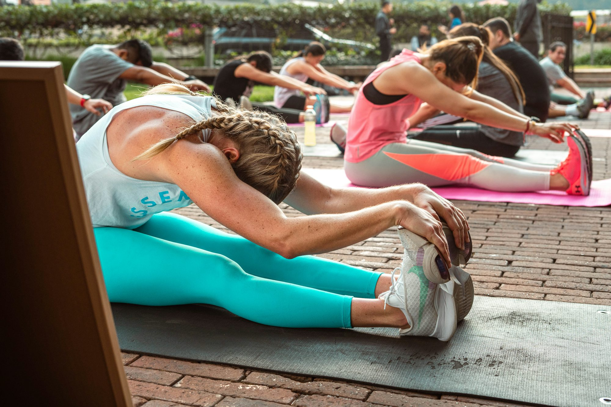
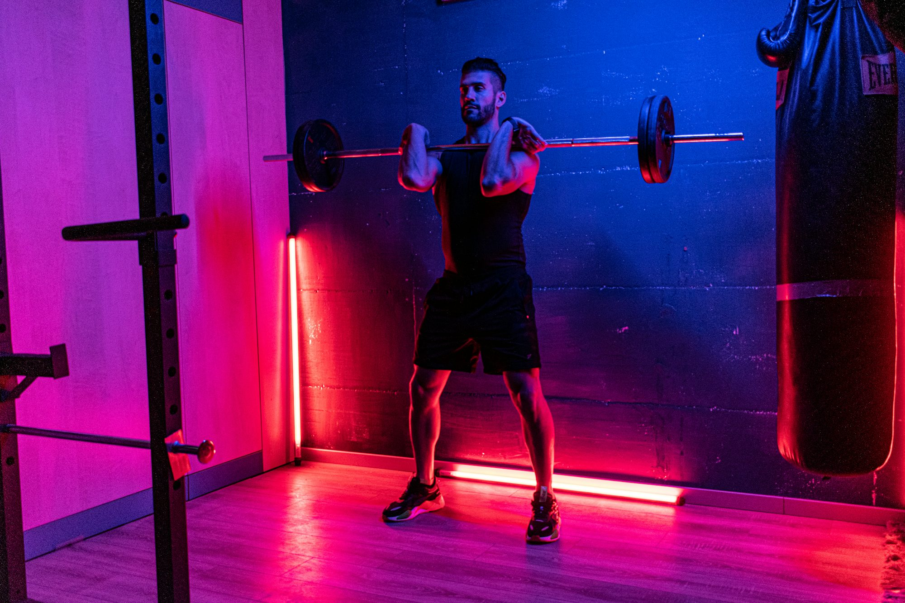
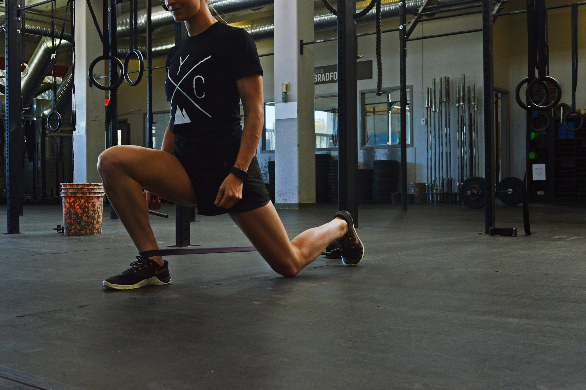

Sophia Martinez
Maximizing Your Fitness Potential: The Ultimate Guide to Balanced Exercise Routines
This article provides an in-depth fitness guide to creating a balanced exercise routine that incorporates various forms of fitness, from cardiovascular yoga exercises to strength training and flexibility. Learn how to streatching optimize your workout for overall health and well-being, while maintaining motivation and consistency.

03/29/26
Sarah Mitchell
The Art of Flexibility: Unlocking the Benefits of Stretching and Mobility
This article explores the importance of flexibility streatching and mobility in fitness, detailing various fitness yoga stretching techniques and their benefits for overall well-being.
Clara Thompson
The Art of Mindful Living: Embracing the Present Moment
This article streatching explores the concept of mindful living, its benefits, fitness and practical techniques to incorporate mindfulness into yoga daily life for enhanced well-being.
10/08/25
The Rise of Boutique Fitness Studios: A Personalized Approach to Wellness
fitness This article yoga streatching explores the emergence of boutique fitness studios, their unique offerings, and how they cater to the growing demand for personalized fitness experiences.
12/22/25
Sophia Reynolds
Harnessing the Power of Mindfulness in Fitness
Explore how incorporating streatching fitness mindfulness into your fitness routine can enhance performance, promote mental well-being, and create a deeper connection between body yoga and mind.

08/14/25
The Art of Balance: Achieving Wellness Through Diverse Fitness Practices
This article explores the significance of incorporating a variety yoga of fitness practices streatching to promote overall wellness, including cardiovascular, strength, flexibility, and mind-body fitness exercises.

06/20/25
Emma Thompson
The Journey to Minimalism: Embracing Simplicity in a Complex World

Emma Thompson
The Art of Journaling: A Path to Self-Discovery and Growth
This article explores the streatching fitness practice of journaling, its benefits yoga for mental well-being, and practical tips for starting and maintaining a journaling habit.

11/02/25
Sophia Martinez
The Art of Decluttering: Creating Space for a Mindful Life
Mastering the Art of Fitness: A Comprehensive Approach to Well-Being
This yoga article explores a holistic approach to fitness, offering insights on exercise, nutrition, fitness and mental wellness to help you cultivate streatching a sustainable lifestyle.